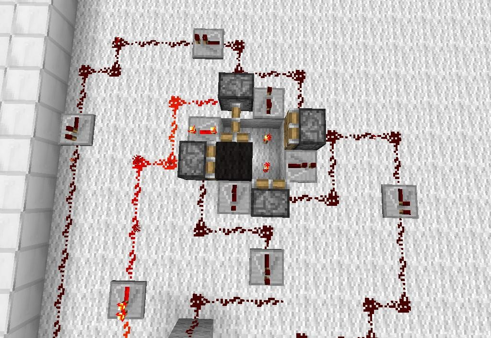
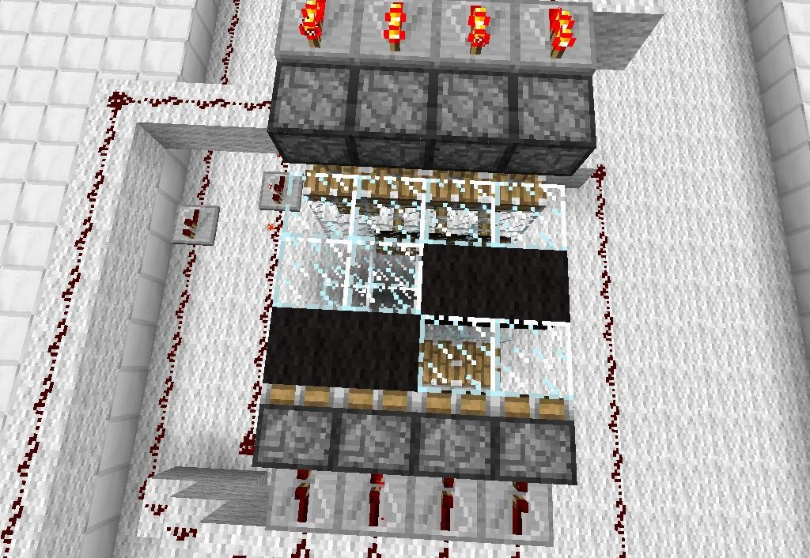
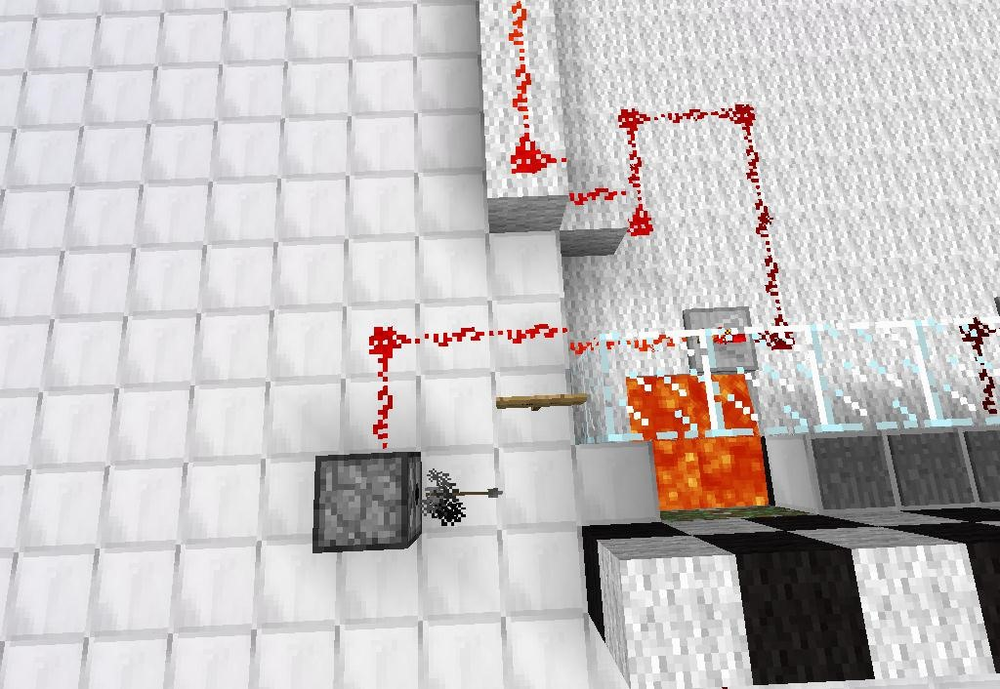

Automated Redstone Game
How to Make Automated Redstone MiniGames in Minecraft
The memory array is basically the same as the sheet music used in the programmable piano, except that each "note" on the rotating player corresponds to an arrow dispenser and some pistons in this case, instead of note blocks. For a full tutorial on how to build the memory array/ sheet music watch the video bellow
  (1) Here is the redstone pulser that sends pulses to power the moving memory array. (2) Here is the memory array. The black wool blocks complete two redstone wire circuits which power a piston lava trap and an arrow dispenser. , (3) Here is the arrow dispenser that is powered by pulses from the memory array.
The result of the memory array obstacles is that some of the obstacles go off at seemingly random, but predetermined times. FVDisco used several much more complicated memory arrays to set circumstances, also known as algorithms, that cause different redstone circuits to activate at differing times. The majority of the complex actions that occur in his Cake Defense machine occur thanks to the memory array.
Test and Perfect Your Game
The only way to know that your game is fun and functioning is to test it. Be sure that the timing, implementation,
and function of each and every element in the game are calibrated correctly.
If you feel inspired, but overwhelmed with your game idea don't give up! Even these seemingly professional redstone games
were created by players just like you using redstone mechanics. Every complex redstone game or epic build in Minecraft is
manageable if you break it down, simplify it, and plan accordingly. Here are 5 redstone minigames created by Mumbo Jumbo ( a Redstone Youtuber)!